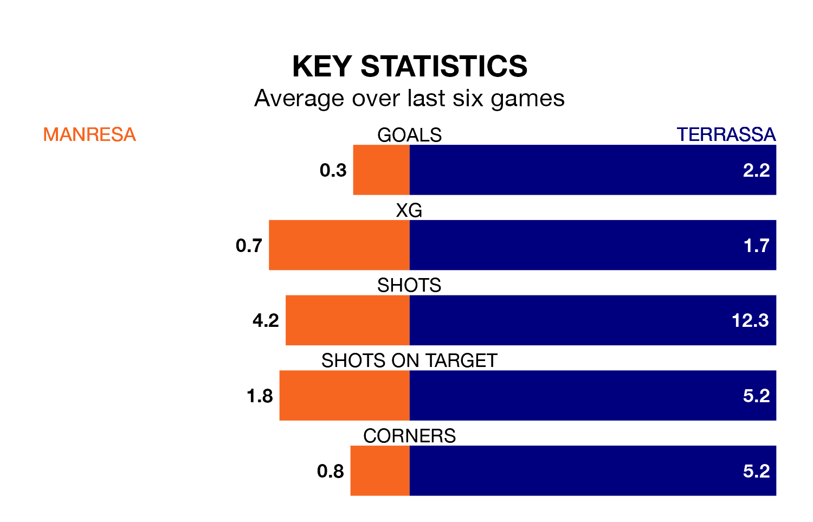

Manresa welcome Terrassa on early Sunday looking to pick up points to end their three-game losing streak.
Manresa's struggles have left them with just three points from their last six Segunda División RFEF Group 3 matches, while their opponents have earned 13 from a possible 18.
Manresa are 17th in the table after 32 games, of which they have won six and drawn eight, earning 26 points.
Terrassa are 11 places ahead of the hosts in sixth, with 12 wins and 10 draws putting them on 46 points.
In the last 10 years, Manresa and Terrassa have played each other on six occasions. Manresa won four of them, Terrassa one, and they drew once.
On average, Manresa scored 1.8 goals and Terrassa 1.2 in those matches.
Their last meeting was on December 17, when they played out a 2-2 draw.
With 22 goals in 32 games so far this season, Manresa are the league's joint-second-lowest scorers with 0.7 goals per game. And they are conceding at an average rate, letting in 39 goals at a rate of 1.2 per game.
The away side, meanwhile, are above average scorers, with 1.3 goals per game, compared to a league average of 1.2. They have conceded 1.2 goals per game.
Manresa's last match was on April 20, a 2-0 loss against La Nucía.
Terrassa lost 2-1 against Atlético Saguntino last time out, on Sunday, with Jofre Cherta Clara on the scoresheet.
Updated: 07:59 (UTC), 26/04/24